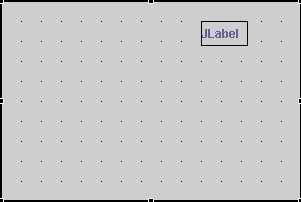

Rather than using a layout manager that controls the size and position of all components in a container, you can set the layout manager to null. Each component then controls its own position and size using its bounds.
If you right-click a container and set the Show Grid option,
you can drag, drop, and move components to a point on the grid, giving you
the ability to align components to positions without using the alignment actions:

You can also start with the layout manager set to null and then change to a layout (like the GridBagLayout) to get the constraint setting calculated by the visual editor for Java. The advantage of having each component control its size and position is that you can specify the x, y, width, and height and be sure that these will always be used at runtime. The disadvantage of having fixed size and height is that they will not resize if the application is resized by the user or if the labels on components such as buttons or check boxes change size based on the user's font or locale.
To see this behavior in the visual editor for Java you can use the drop-down list of values in the Properties view for the layout property and select null.
When you set the layout manager for an existing container to null, the Design view does not change in appearance. The visual editor calculates the current bounds of each component and explicitly sets them for you. For example, suppose you have a container that uses the FlowLayout layout manager and contains a JLabel bean. Before you set layout to null, the code to initialize the JLabel bean only has its label property set, as shown here:
private javax.swing.JLabel getIvjJLabel(){
if(ivjJLabel == null) {
ivjJLabel = new javax.swing.JLabel();
ivjJLabel.setText("JLabel");
}
return ivjJLabel;
}
If you then use the Properties view to change the layout manager to null, the code would look something like this:
private javax.swing.JLabel getIvjJLabel(){
if(ivjJLabel == null) {
ivjJLabel = new javax.swing.JLabel();
ivjJLabel.setBounds(59, 10, 38, 15);
ivjJLabel.setText("JLabel");
}
return ivjJLabel;
}
In the same example, as soon as you set the layout manager to null, the Properties view for each component displays values for bounds, size, and location. These values do not appear when the parent container uses any other layout manager, because component properties do not change when the layout manager controls positioning and sizing.
When you set the layout for a container to null, the handles for each component in the Design view allow resizing. You can also size a bean as you add it from the palette. Simply hold down the left mouse button when you drop the bean in the Design view, and drag the mouse pointer until the bean is the desired size. A target feedback rectangle shows you the initial size. In any other layout manager you are only allowed to move or add components.
Parent topic: Laying out components using the visual editor
Related concepts
Layout managers and containers